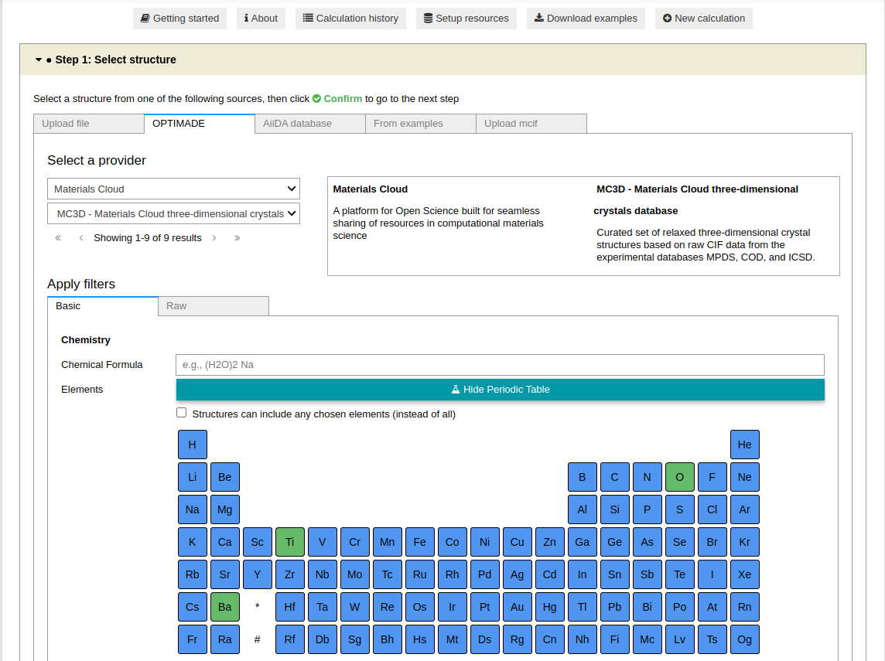
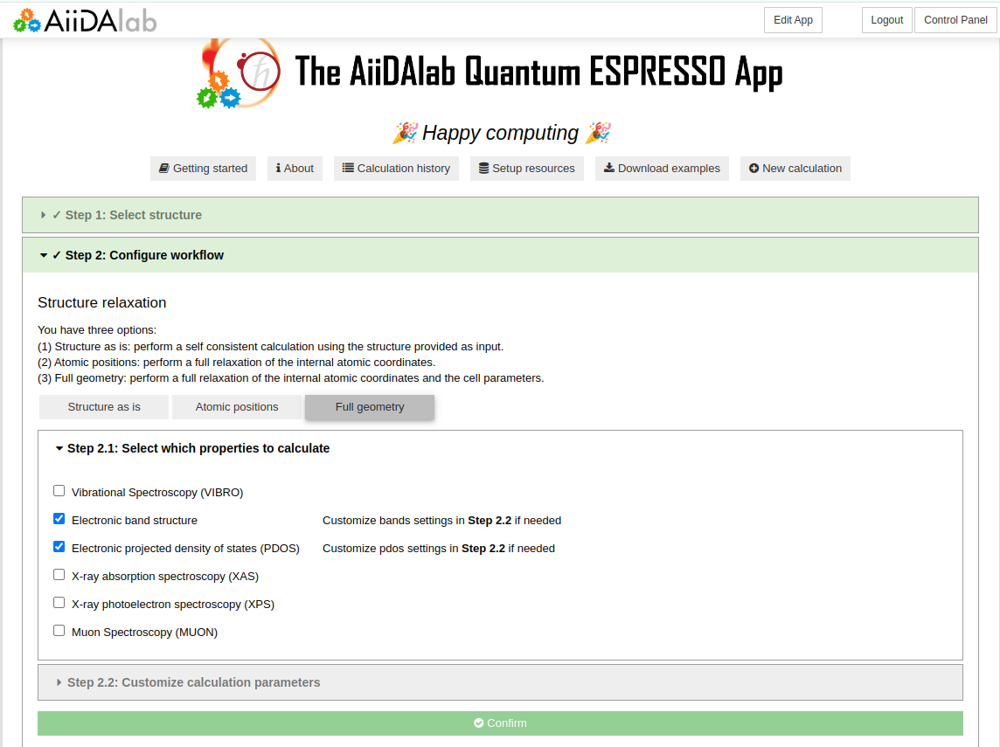
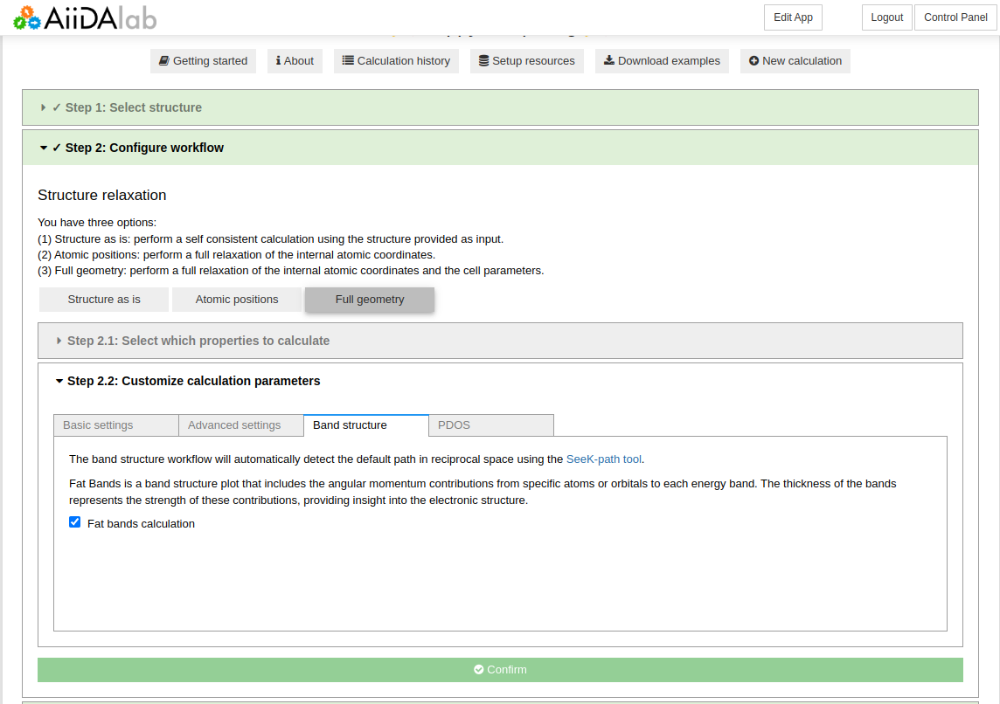
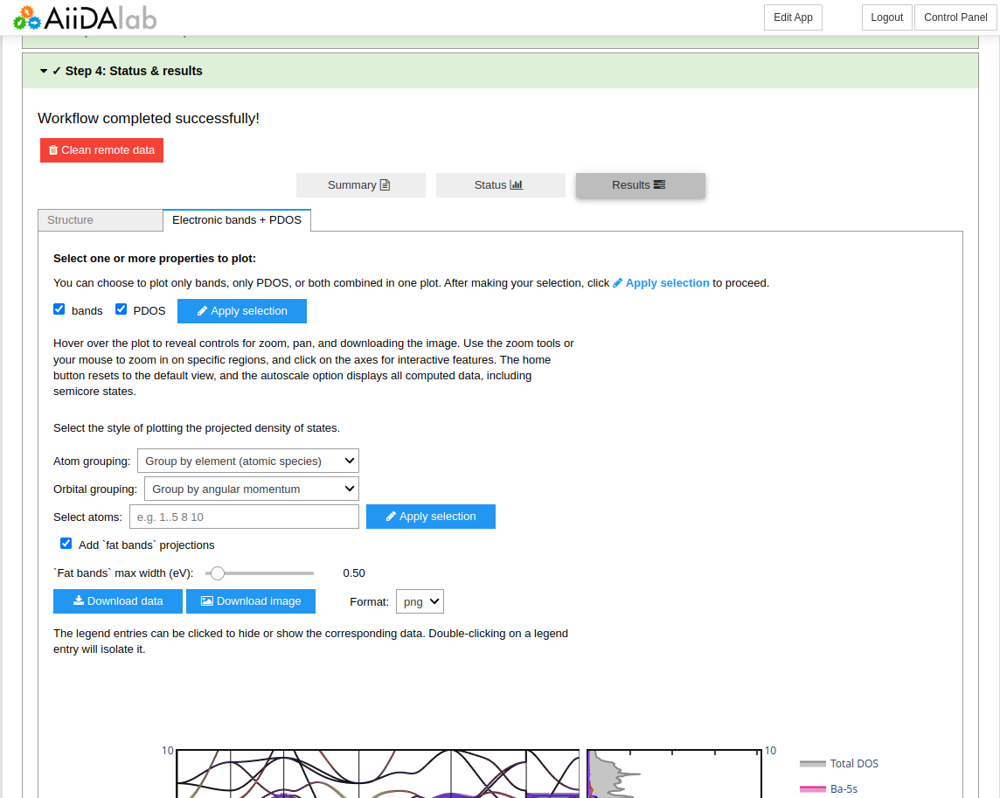
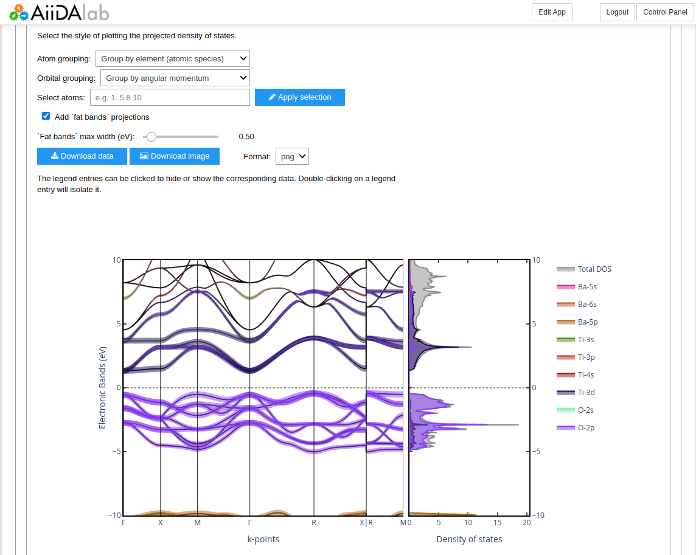

How to calculate Electronic band structure and DOS#
Overview#
In the following, we show how to compute the electronic band structure and Projected Density of States (PDOS) of BaTiO3.
Due to the number of calculation steps required, we will need to set up our environment to submit to a remote machine capable of handling the calculation. Please refer to the relevant How-To section for this procedure.
Goal
Obtain the electronic bands and PDOS of BaTiO3 using the Quantum ESPRESSO app.
Start#
To start, go ahead and launch the app, then follow the steps below.
Step 1: Select the structure from the OPTIMADE database#
Open the OPTIMADE tab and select Materials Cloud from the first dropdown menu, and MC3D from the second dropdown menu.
Then, in the periodic table, select the elements Ba, Ti, and O to filter the results. Once done, click on the Search button to see the results.
{kind=link}
You will see several results. Select the third entry, BaO3Ti (id=69278), and click on the Confirm button.
{kind=link}
Step 2: Configure the workflow#
Select Full geometry to relax the structure and select Electronic band structure and Electronic projected density of states (PDOS) as the properties of interest.
{kind=link}
Note
We will use the moderate protocol for this calculation, as it provides a good balance between accuracy and computational cost. If you have access to a remote machine, you can use the precise protocol for more accurate results. At variance, the fast protocol can be used for a quick (test) calculation.
Open the Band structure settings tab in Step 2.2, and select Fat bands calculation to enable the calculation of the band structure with projected atomic orbitals contributions.
{kind=link}
Step 3 - Choose computational resources#
In Step 3, you can select a given pw.x code and computer to run the simulations. As mentioned above, we will use moderate protocol for this calculation. If you have access to a remote machine, you can set it up and then use it. Please refer to the relevant How-To section for this procedure.
Then, click the Submit button to start the AiiDA workflow.
Step 4: Check the status#
While the calculation is running, you can monitor its status as shown in the basic tutorial. You can view the results once the calculation is finished.
Step 5: Results#
Once the calculation is finished, you can access the Electronic bands + PDOS tab to view the results. There are several parameters you can use to tune the plots, e.g. the atomic/orbital grouping to visualize the PDOS.
{kind=link}
Note
All the data can be downloaded by means of the corresponding Download data button.
You can inspect the interactive plot, for example zooming on specific regions, or selecting specific orbitals to visualize their contributions to the band structure.
{kind=link}
Summary#
Here, you learned how to submit and visualize basic electronic properties of materials using the Quantum ESPRESSO app.